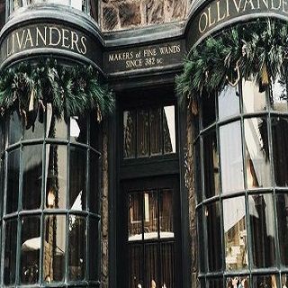

Sobre a loja
Olivaras Varinhas é uma loja de varinhas fundada em 382 a.C . Localizada no lado sul do Beco Diagonal em Londres, Inglaterra. É de propriedade da família Olivaras, sendo que Garrick Olivaras é amplamente reconhecido como o melhor fabricante de varinhas da Grã-Bretanha.
Não se intimide com as milhares de opções: a varinha escolhe o bruxo! E para garantir pergaminho e penas de altíssimo nível, a Olivaras é sempre o lugar ideal.